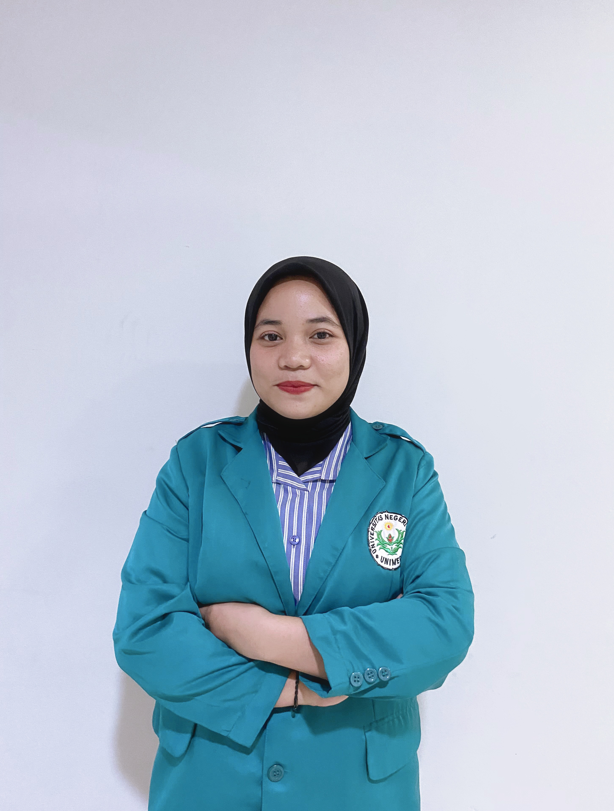

Selamat datang di MSCE! Website ini dirancang untuk membantumu memahami Kesetimbangan Kimia sekaligus menumbuhkan rasa kagum dan syukur terhadap keindahan keteraturan alam. Ikuti panduan berikut agar pengalamanmu lebih bermakna.
🧭 Navigasi
1
Klik logo MSCE di halaman utama untuk memunculkan menu satelit. Empat ikon akan muncul berjejer di bawah logo.
2
Saat berada di dalam halaman, gunakan menu kanan atas (navbar) untuk berpindah antarhalaman kapan saja.
3
Klik logo MSCE di navbar kiri atas untuk kembali ke halaman awal.
🏠 Beranda
🔑
Kata Kunci — Klik setiap tag untuk melihat definisi istilah penting sebelum belajar.
🗺️
Peta Konsep — Gunakan sebagai panduan alur belajarmu dari awal hingga akhir materi.
🎯
ATP — Tunjukkan apa yang harus kamu capai di setiap sub-materi.
📚 Materi
1
Pilih sub-materi menggunakan tab di bagian atas halaman Materi (01, 02, 03, dst.).
2
Baca materi secara berurutan. Setiap sub-materi dilengkapi contoh, simulasi, soal latihan.
3
Gunakan tombol "Materi Berikutnya →" di akhir setiap tab untuk melanjutkan secara berurutan.
📝 Evaluasi
1
Klik Mulai untuk mengerjakan soal-soal evaluasi.
1
Baca materi dengan teliti dan perhatikan waktu yang tersisa. Setiap soal diberi waktu 60 detik.
1
Klik jawaban yang menurutmu benar, maka akan muncul feedback benar/salah secara langsung.
✨ Refleksi Spiritual
MSCE bukan sekadar media belajar Kesetimbangan Kimia. Di setiap bagian, kamu akan menemukan momen untuk berhenti sejenak dan merenungkan keindahan yang tersembunyi di balik fenomena kesetimbangan alam.
🌌
Kutipan Berputar di Beranda — Baca perlahan dan resapi maknanya.
🙏
Tombol "Refleksi Spiritual" di setiap sub-materi — Klik dan luangkan waktu sejenak untuk membaca sebelum melanjutkan.
💡 Refleksi ini bersifat universal dan terbuka untuk semua — bukan tentang agama tertentu, melainkan tentang rasa kagum dan syukur terhadap keteraturan alam semesta.
💡 Tips Belajar
Mulai dari Beranda → baca Kata Kunci dan Peta Konsep terlebih dahulu.
Pelajari Materi secara berurutan dari awal hingga selesai.
Kerjakan Evaluasi setelah semua materi selesai dipelajari.
Jangan lewati Refleksi Spiritual — itu bagian terpenting dari pengalaman belajar di sini. 🌟
🌌
MOMEN AWE · RASA KAGUM
"Di setiap reaksi kimia yang seimbang, tersembunyi keteraturan yang jauh melampaui rancangan manusia."
Selanjutnya, pilih yang paling mewakili perasaanmu saat ini:
WELCOME TO
MY SPIRITUAL-CHEMICAL EQUILIBRIUM
Multimedia Interaktif Berbasis Website Terintegrasi Nilai Spiritual
✨
REFLEKSI SPIRITUAL
"Semakin dalam kamu memahami kimia, semakin dalam pula kamu akan mengagumi rahasia yang disembunyikan alam semesta.
Peta perjalanan dalam menjelajahi misteri Kesetimbangan Kimia.
Kesetimbangan Kimia
Konsep Kesetimbangan Kimia
Reaksi Reversible dan Irreversible
Kesetimbangan Dinamis
Sistem Homogen dan Heterogen
Tetapan Kesetimbangan
Hukum Kesetimbangan
Kc dan Perhitungannya
Kp dan Perhitungannya
Pergeseran Kesetimbangan
Kesetimbangan dalam Industri
Proses Haber-Bosch (Amonia)
Proses Kontak (Asam Sulfat)
ALUR TUJUAN PEMBELAJARAN
(ATP 11.5)
11.5.1
Konsep Dasar
ketuk untuk lihat tujuan ↻
11.5.1 · KONSEP DASAR
Menjelaskan konsep dasar kesetimbangan kimia.
11.5.2
Tetapan K
ketuk untuk lihat tujuan ↻
11.5.2 · TETAPAN K
Menentukan harga tetapan kesetimbangan, dan menganalisa hubungan tetapan Kc dengan Kp.
11.5.3
Perhitungan K
ketuk untuk lihat tujuan ↻
11.5.3 · PERHITUNGAN K
Menggunakan tetapan kesetimbangan dalam menghitung konsentrasi pada saat kesetimbangan.
11.5.4
Pergeseran K
ketuk untuk lihat tujuan ↻
11.5.4 · PERGESERAN K
Menjelaskan faktor-faktor yang memengaruhi pergeseran kesetimbangan.
11.5.5
Aplikasi Industri
ketuk untuk lihat tujuan ↻
11.5.5 · APLIKASI INDUSTRI
Mendeskripsikan aplikasi kesetimbangan kimia dalam kehidupan sehari-hari, khususnya dalam dunia industri.
Dunia Kesetimbangan Kimia
🌌
MOMEN AWE · RASA KAGUM
Keajaiban di Balik Kesetimbangan
"Di setiap reaksi kimia yang seimbang, tersembunyi keteraturan yang jauh melampaui rancangan manusia."
Apa yang kamu rasakan setelah memahami fenomena ini?
Pilih yang paling mewakili perasaanmu saat ini:
01
⚗️
Konsep Kesetimbangan Kimia
Keseimbangan sempurna dalam interaksi dua arah
Pernahkah kamu melihat gelas berisi air yang dibiarkan tertutup berhari-hari — tetapi isinya tidak berkurang? Kenapa, ya?
Kamu akan temukan jawabannya setelah mempelajari Materi ini, karena ..
Hal tersebut adalah gambaran paling sederhana dari kesetimbangan kimia.
⚗️ Jenis Reaksi
Irreversible dan Reversible
Kesetimbangan kimia identik dengan reaksi reversibel yang ditandai dengan panah ganda (⇌).
Artinya, reaksi berjalan ke kanan (membentuk produk) sekaligus ke kiri (membentuk reaktan) dalam satu sistem yang sama.
Irreversible (→)
Reaksi satu arah yang tidak bisa kembali
A + B → C + D
Klik untuk contoh ↩
Contoh:
Kertas + Api → Abu
Kertas yang terbakar tidak bisa kembali menjadi kayu. Reaksi hanya berjalan ke satu arah dan tidak dapat dibalik dalam kondisi normal.
Klik untuk tutup ↩
Reversible (⇌)
Reaksi dua arah yang setimbang
aA + bB ⇌ cC + dD
Klik untuk contoh ↩
Contoh:
Es ⇌ Air
Es bisa mencair menjadi air dan air bisa membeku kembali menjadi es.
Reaksi berjalan ke kanan dan ke kiri sekaligus.
Inilah dasar kesetimbangan kimia — sistem yang terus bergerak dua arah.
Klik untuk tutup ↩
🔬 Observasi
Tembaga Sulfat Pentahidrat (CuSO₄·5H₂O)
Ambil kristal biru CuSO₄·5H₂O, masukkan ke dalam wadah tertutup, lalu panaskan.
Kristal biru itu akan berubah menjadi serbuk putih dan melepaskan molekul air, meninggalkan CuSO₄ anhidrat.
PEMANASAN → AIR TERLEPAS
(Kristal biru jadi serbuk putih)
CuSO₄·5H₂O(s) → CuSO₄(s) + 5H₂O(l)
Selanjutnya — air tadi akan menguap dan mengembun di pinggiran wadah, hingga akhirnya kembali ke serbuk putih itu.
Sehingga warna biru pada kristal akan muncul lagi dan reaksi berjalan balik.
PENGEMBUNAN → AIR KEMBALI
(Serbuk putih jadi biru lagi)
CuSO₄(s) + 5H₂O(l) → CuSO₄·5H₂O(s)
Gabungan Kedua Reaksi: CuSO₄·5H₂O(s) ⇌ CuSO₄(s) + 5H₂O(l)
⚖️ Konsep Kunci
Kapan Sistem Mencapai Kesetimbangan?
Dalam sistem tertutup, kesetimbangan tercapai ketika sistem tidak lagi menunjukkan perubahan makroskopis (tampak luar).
Kondisi inilah yang kita sebut sebagai Kesetimbangan Dinamis.
Secara visual, hal ini ditandai oleh dua kondisi pada grafik berikut:
Konsentrasi vs Waktu
Keterangan: Jumlah reaktan dan produk menjadi tetap (konstan) seiring berjalannya waktu, ditandai dengan garis yang mulai mendatar.
Laju Reaksi vs Waktu
Keterangan: Laju reaksi maju (V1) dan laju reaksi balik (V2) menjadi sama besar (V1 = V2), ditandai dengan bertemunya kedua garis di satu titik yang sama.
🔑 Syarat Utama
🔑 Syarat Kesetimbangan Dinamis
Klik kartu untuk membuka penjelasannya ✦
01✅🔄
Reaksi Reversible
Reaksi bisa berjalan dua arah
↻ ketuk untuk penjelasan
Syarat 1
Hanya reaksi bolak-balik yang bisa mencapai kesetimbangan. Produk bisa balik jadi reaktan — terus tanpa henti.
A + B ⇌ C + D
02✅🔒
Sistem Tertutup
Tidak ada zat yang keluar masuk
↻ ketuk untuk penjelasan
Syarat 2
Wadah harus tertutup agar tidak ada zat yang hilang. Sistem terbuka = zat kabur = gagal setimbang.
🌍 Bumi = sistem tertutup
03✅⚖️
v₁ = v₂
Laju maju = laju balik
↻ ketuk untuk penjelasan
Syarat 3
Setimbang saat v₁ = v₂. Awalnya v₁ > v₂, lalu keduanya bertemu di titik yang sama.
v₁ > v₂ → v₁ = v₂
04✅🔬
Bersifat Mikroskopis
Diam di luar, aktif di dalam
↻ ketuk untuk penjelasan
Syarat 4
Tampak diam secara makroskopis, tapi di tingkat partikel reaksi terus berlangsung tanpa henti.
👁 diam · 🔬 aktif terus
🎉Semua syarat sudah dipelajari! Kamu siap lanjut.
🔬 SIMULASI INTERAKTIF
Amati perubahan makroskopik dan mikroskopik secara bersamaan
Makro ⇌ Mikro
CuSO₄·5H₂O(s) ⇌ CuSO₄(s) + 5H₂O(g)
Laju Maju
CuSO₄·5H₂O → CuSO₄ + H₂O
→→→→→
≠
belum setimbang
Laju Balik
CuSO₄ + H₂O → CuSO₄·5H₂O
←
✨ Amati simulasi — perhatikan apa yang terjadi di level partikel!
🧪 Klasifikasi
Jenis Kesetimbangan Dinamis
Homogen
▼
Semua reaktan dan produk berada dalam fase yang sama — sama-sama gas, atau sama-sama larutan.
Contoh 1 — Semua gas:
N₂(g) + 3H₂(g) ⇌ 2NH₃(g)
Contoh 2 — Semua larutan:
CH₃COOH(aq) ⇌ CH₃COO⁻(aq) + H⁺(aq)
Heterogen
▼
Reaktan dan produk berada dalam fase yang berbeda — ada yang padat, ada yang gas, ada yang cair.
Contoh — Padat + Gas:
CaCO₃(s) ⇌ CaO(s) + CO₂(g)
CaCO₃ & CaO = padat (s) | CO₂ = gas (g)
Contoh lain:
AgCl(s) ⇌ Ag⁺(aq) + Cl⁻(aq)
📝 AYO BERLATIH
Menentukan jenis kesetimbangan — klik jawabanmu untuk setiap reaksi.
1AgCl(s) ⇌ Ag⁺(aq) + Cl⁻(aq)
2PCl₅(g) ⇌ PCl₃(g) + Cl₂(g)
3Fe₂O₃(s) + 3CO(g) ⇌ 2Fe(s) + 3CO₂(g)
42N₂O₅(g) ⇌ 4NO₂(g) + O₂(g)
🔎 CASE METHOD
Klik pertanyaan → pikir sebentar → buka jawaban.
🫁
Studi Kasus: Hemoglobin dalam Darahmu
Hb(aq) + O₂(g) ⇌ HbO2(aq)
Di paru-paru, Hb mengikat O₂. Di sel tubuh, Hb melepasnya kembali.
a
Homogen atau heterogen?
▾
✓ Heterogen
reaksi memiliki dua fasa yang berbeda yaitu (aq) dan (g)
b
Apa yang terjadi jika reaksi ini Irreversibel?
▾
Di Paru-paru (O2 Tinggi): Konsentrasi reaktan naik, kesetimbangan geser ke kanan (Hb mengikat O2 menjadi HbO2).
Di Jaringan (O2 Rendah): Konsentrasi reaktan turun, kesetimbangan geser ke kiri (Hb melepas O2 untuk sel tubuh).
Jika ini adalah reaksi irreversible, maka:
Hb tidak bisa melepas O₂ → oksigen tidak sampai ke sel → tubuh tidak bisa hidup.
🙏 Pernah terpikir ga? Di dalam dirimu, terdapat miliaran proses yang terjadi setiap detik tanpa kamu suruh hanya untuk menjaga agar kamu tetap hidup
✅ CEK PEMAHAMAN
3 soal terakhir sebelum lanjut ke materi berikutnya.
1. Pernyataan yang PALING TEPAT tentang kesetimbangan dinamis adalah...
2. Reaksi CaCO₃(s) ⇌ CaO(s) + CO₂(g) termasuk kesetimbangan...
3. Mengapa kesetimbangan kimia hanya bisa terjadi dalam sistem tertutup?
0/3
✨ Refleksi Spiritual
Ketidakteraturan yang Teratur
Di dalam larutan yang tampak diam, sebenarnya terdapat miliaran partikel yang sedang bergerak, bertumbukan, bereaksi, dan kembali — setiap detik, tanpa henti, tanpa kesalahan satu kali pun.
Klik untuk melihat makna▼
"Sistem tampak diam" yang terlihat kita adalah hasil dari pergerakan partikel yang sempurna .
Bukan hanya pada larutan, tetapi juga di dalam tubuhmu. Bukankah itu sesuatu yang layak membuat kita berhenti sejenak dan merasa kagum?"
🥰 EKSPLORASI RASA — Apa yang tertinggal di hatimu setelah belajar sub-topik ini?
Merasa Kagum akan cara kerja alam semesta untuk mencapai kesetimbangan dan keteraturan
☆☆☆☆☆
Merasa bersyukur karena mampu mengetahui dan memahami pergerakan partikel dibalik sebuah sistem yang diam
☆☆☆☆☆
✨ Terima kasih sudah bersedia mengekspresikan perasaanmu!
02
📐
Tetapan Kesetimbangan
Identitas dari setiap sistem reaksi
⚖️ 1864 — Norwegia, Hukum Aksi Massa
Cato Guldberg dan Peter Waage menemukan pola menakjubkan:
Dalam keadaan setimbang, pada suhu tertentu. Hasil kali konsentrasi zat hasil reaksi (Produk) dibagi dengan hasil kali konsentrasi zat awal (Reaktan). Kemudian,
masing-masing dipangkatkan dengan koefisien reaksinya, akan menghasilkan nilai yang tetap.
⚠️ Aturan Fase: Hanya zat berwujud Gas (g) dan Larutan (aq) yang dimasukkan.
📝 Contoh Penulisan Kc — Klik untuk lihat jawaban
1Fe₂O₃(s) + 3CO(g) ⇌ 2Fe(s) + 3CO₂(g)▾
Fe₂O₃(s) dan Fe(s) padat → tidak masuk. CO(g) reaktan dan CO₂(g) produk → keduanya gas → masuk.
Kc = [CO₂]³ / [CO]³
2CaCO₃(s) ⇌ CaO(s) + CO₂(g)▾
CaCO₃(s) dan CaO(s) padat → tidak masuk. Hanya CO₂(g) yang tersisa → Kc hanya mengandung CO₂.
Kc = [CO₂]
3CH₃COO⁻(aq) + H₂O(l) ⇌ CH₃COOH(aq) + OH⁻(aq)▾
H₂O(l) → cair murni → tidak masuk. Semua zat bernotasi (aq) masuk ke Kc.
Kc = [CH₃COOH][OH⁻] / [CH₃COO⁻]
42HI(g) ⇌ H₂(g) + I₂(g)▾
Semua berwujud gas (g) → semua masuk. Koefisien 2 pada HI menjadi pangkat 2 di penyebut rumus Kc.
Kc = [H₂][I₂] / [HI]²
💨 Kp
b. Tetapan Kesetimbangan Tekanan (Kp)
Diberikan sebuah reaksi: aA + bB ⇌ cC + dD:
Rumus Kp
Kp =
(PC)c · (PD)d
(PA)a · (PB)b
Kp = Tetapan kesetimbangan (berdasarkan tekanan)
PX = Tekanan parsial gas X (atm)
a,b,c,d = Koefisien reaksi
⚠️ Aturan Fase: Hanya zat berwujud Gas (g) yang dimasukkan. Padat (s) dan cair (l) diabaikan.
📝 Contoh Penulisan Kp — Klik untuk lihat jawaban
12NOCl(g) ⇌ 2NO(g) + Cl₂(g)▾
Reaktan dan produk → ketiganya gas → masuk.
Kp = (PNO)² · PCl₂ / (PNOCl)²
2CaCO₃(s) ⇌ CaO(s) + CO₂(g)▾
CaCO₃(s) dan CaO(s) padat → tidak masuk, hanya CO₂(g) yang berfasa gas → masuk.
Kp = PCO₂
🔗 Hubungan Kc & Kp
c. Hubungan Kc dan Kp
Ingin mengubah nilai Kc menjadi Kp atau sebaliknya? Keduanya dihubungkan oleh suhu dan selisih molekul gas. Berikut tetapannya:
RUMUS
Kp = Kc(RT)Δn
R = Tetapan gas ideal (selalu bernilai 0,082)
T = Suhu mutlak dalam Kelvin (°C + 273)
Δn = (Total koefisien gas Produk) − (Total koefisien gas Reaktan)
🔍 Cara Mudah Menghitung Δn
jumlahkan angka depan (koefisien) dari setiap zat yang berwujud gas (g).
REAKTAN
N₂(g) + 3H₂(g)
1 + 3 = 4 mol
⇌
PRODUK
2NH₃(g)
= 2 mol
Δn = Kanan - Kiri
Δn = 2 - 4
Δn = -2
Apa arti nilai Δn terhadap perbandingan Kp dan Kc? (Klik kartu untuk melihat rahasianya!)
Δn > 0
Mol Kanan > Kiri
Buka ▾
Kp > Kc
PCl₅ ⇌ PCl₃ + Cl₂
Δn = 0
Mol Kanan = Kiri
Buka ▾
Kp = Kc
H₂ + I₂ ⇌ 2HI
Δn < 0
Mol Kanan < Kiri
Buka ▾
Kp < Kc
N₂ + 3H₂ ⇌ 2NH₃
🔎 CASE METHOD
Klik pertanyaan → pikir sebentar → buka jawaban.
🚗
Studi Kasus: Polusi Gas NO
N₂(g) + O₂(g) ⇌ 2NO(g)
Udara bersih sebagian besar berisi gas Nitrogen (N₂) dan Oksigen (O₂). Pada suhu normal, mereka tidak bereaksi. Namun, di dalam mesin mobil yang sangat panas, keduanya bereaksi membentuk gas beracun (NO). Mari kita analisis sistem kesetimbangannya!
a
Berdasarkan wujud zatnya, tuliskan ekspresi (rumus) Kc dan Kp untuk reaksi di atas!
▾
Karena semua zat berwujud gas (g), maka semuanya dimasukkan ke dalam rumus:
Kc = [NO]² / ( [N₂] · [O₂] )
Kp = (PNO)² / ( PN₂ · PO₂ )
b
Tanpa melakukan perhitungan angka, tentukan apakah nilai Kp akan lebih besar, lebih kecil, atau sama dengan Kc! Berikan alasanmu!
▾
✓ Nilai Kp = Kc
Alasan: Mari kita hitung selisih mol gasnya (Δn).
• Gas di Kanan (Produk) = 2
• Gas di Kiri (Reaktan) = 1 (N₂) + 1 (O₂) = 2
Karena Kanan = Kiri, maka Δn = 0.
Sesuai rumus penghubung, jika Δn = 0, maka (RT)⁰ = 1, sehingga Kp sama persis dengan Kc.
✅ CEK PEMAHAMAN
3 soal terakhir sebelum lanjut ke materi berikutnya.
1. Dari tabel eksperimen di atas: konsentrasi awal berbeda di tiap percobaan, tapi Kc selalu ≈ 0,051. Apa yang bisa disimpulkan?
4. Diketahui sebuah reaksi N₂(g) + 3H₂(g) ⇌ 2NH₃(g). Nilai Δn = ? dan hubungan Kp dengan Kc?
0/4
✨Refleksi Spiritual
Keteraturan dan Rasa Syukur?
Di balik Kc dan Kp yang tampak rumit, tersimpan sesuatu yang jauh lebih dalam —
sebuah keteraturan yang tidak pernah meleset, bahkan satu kali pun, sejak alam semesta ini ada.
Klik untuk melihat makna▼
"Mungkin hari ini kamu belajar Kc dan Kp karena terpaksa harus belajar.
Tapi coba renungkan — alam sudah "menghitung" ini jauh sebelum kamu lahir,
jauh sebelum Guldberg dan Waage menemukannya, bahkan jauh sebelum manusia pertama menginjakkan kaki di bumi.
Keteraturan ini adalah anugerah yang luar biasa —
dan kamu, hari ini, diberi kesempatan untuk memahaminya.
Bukankah itu sesuatu yang patut disyukuri?"
🥰 EKSPLORASI RASA — Apa yang tertinggal di hatimu setelah belajar sub-topik ini?
Syukur bisa belajar dan memahami rumus-rumus luar biasa ini
☆☆☆☆☆
Kagum terhadap keteraturan nilai K yang konstan pada suhu sama
☆☆☆☆☆
✨ Terima kasih sudah bersedia mengekspresikan perasaanmu!
03
🧮
Perhitungan K
Pembuktian Keteraturan Alam Melalui Rumus Kimia
Kini saatnya menggunakan Tetapan K dalam perhitungan — mulai dari Tabel ICE, hitung Kc & Kp, hubungan keduanya, hingga Derajat Disosiasi (α).
🧊 Tabel ICE
a. Tabel ICE — Alat Lacak Kesetimbangan
Tabel ICE digunakan untuk menghitung perubahan konsentrasi dari awal hingga setimbang. Tekan "Lanjut" untuk melihat baris demi baris.
Langkah 1 dari 5
H₂(g) + I₂(g) ⇌ 2HI(g)
[H₂] dan [I₂] mula-mula = 1M
[HI] setimbang = 1,6M
—
H₂
I₂
2HI
I
1 M
1 M
0 M
C
−0,8
−0,8
+1,6
E
0,2 M
0,2 M
1,6 M
📌 Aturan Dasar Tabel ICE
1
Produk selalu dimulai dari 0
2
Baris C mengikuti rasio koefisien — koefisien 2 berarti perubahan 2x, bukan x
3
E = I + C (harus bernilai positif)
4
Hanya zat dengan fasa gas (g) dan larutan (aq) yang dimasukkan ke rumus K
🧊 LATIHAN TABEL ICE
Isi sel yang kosong (bertanda ?), lalu klik Cek Jawabanku!
Pilih soal:
N₂(g) + 3H₂(g) ⇌ 2NH₃(g)
📐 Menghitung Kc
b. Menghitung Kc
Kc adalah konstanta atau tetapan kesetimbangan konsentrasi yang harganya tetap selama suhu tetap. [A], [B], [C], dan [D] adalah konsentrasi zat A, B, C, dan D (dengan satuan M (molaritas) atau mol/liter).
Contoh: N₂(g) + 3H₂(g) ⇌ 2NH₃(g)
Kc =
[NH₃]2
[N₂][H₂]3
⚠Zat padat (s) & cair murni (l) tidak dimasukkan
Substitusi nilai setimbang: [N₂]=0,8 M · [H₂]=2,4 M · [NH₃]=0,4 M
Kc=(0,4)² / (0,8 × (2,4)³)
=0,16 / 11,06
≈0,0145K < 1 → reaktan dominan
K < 1 reaktan dominan
K ≈ 1 setimbang
K > 1 produk dominan
🧮 KALKULATOR Kc
Pilih reaksi atau masukkan konsentrasi setimbang untuk menghitung Kc secara otomatis!
Pilih reaksi:
N₂(g) + 3H₂(g) ⇌ 2NH₃(g)
Atur zat & koefisien sendiri:
💨 Menghitung Kp
c. Menghitung Kp
Tetapan kesetimbangan berdasarkan tekanan gas dinyatakan dengan notasi Kp, yaitu hasil kali tekanan parsial gas-gas produk dibagi dengan hasil kali tekanan parsial gas-gas reaktan,
masing-masing tekanan parsial gas dipangkatkan koefisiennya menurut persamaan reaksi.
Contoh: 2NH₃(g) ⇌ N₂(g) + 3H₂(g)
Kp =
(PN₂) . (PH₂)3
(PNH₃)2
⚠Hanya gas (g) — zat padat & cair murni tidak masuk
✦ Struktur identik — sama seperti perhitungan Kc, hanya ganti [x] konsentrasi dengan P tekanan parsial (atm)
💨 KALKULATOR Kp
Pilih reaksi atau masukkan tekanan parsial masing-masing gas!
Pilih reaksi:
2SO₂(g) + O₂(g) ⇌ 2SO₃(g)
Atur zat & koefisien sendiri:
🔗 Kc ↔ Kp
d. Penerapan Hubungan Kc dan Kp
Gunakan rumus Kp = Kc(RT)Δn untuk mengkonversi. Coba langsung dengan kalkulator di bawah!
🔗 KONVERTER Kc ↔ Kp
Masukkan nilai Kc atau Kp, suhu, dan Δn — sistem hitung yang lain!
Δn = Σkoef produk − Σkoef reaktan (hanya gas)
⚡ Manipulasi K
e. Manipulasi Persamaan K
⚡ Aturan Perubahan K
Atur nilai K dan pilih perubahan yang terjadi — Amati hasilnya!
K = 4
2
🎯 Quick Check!
—
⚗️ Derajat Disosiasi
e. Derajat Disosiasi (α)
Disosiasi adalah penguraian suatu zat menjadi beberapa zat lain yang lebih sederhana. Derajat disosiasi adalah perbandingan antara jumlah mol yang terurai dengan jumlah mol mula-mula. gunakan tabel ICE untuk menghitungnya!
RUMUS
α =
nbereaksinmula-mula
α selalu antara 0 dan 1 | α = 0,75 artinya 75% bereaksi | sisa = (1−α) × mol awal
🖊️ Contoh Soal
PCl₅(g) ⇌ PCl₃(g) + Cl₂(g)
1 mol PCl₅ dalam 1 L · α = 0,6 · Hitung Kc!
1 Berapa mol PCl₅ yang bereaksi?
2 Konsentrasi PCl₅ saat setimbang (baris E) adalah…
3 Karena α = 0,6, maka [PCl₃] = [Cl₂] saat setimbang = ?
Hitung Kp pada 25°C (298K). Lebih besar atau lebih kecil dari Kc?
▾
Δn = 2 − 1 = +1 → Kp > Kc
RT = 0,082 × 298 = 24,4
Kp = 2 × (24,4)¹ = 48,8 ✓
🙏 NO₂ adalah komponen smog yang mencemari udara kota. Memahami kesetimbangannya adalah langkah awal peduli lingkungan — bentuk syukur nyata atas udara bersih yang kita nikmati.
⚡ CEK PEMAHAMAN
Bacalah soal dengan teliti dan berikan jawaban terbaikmu!
1. Pada baris C (Change) tabel ICE, tanda perubahan konsentrasi reaktan adalah...
2. Reaksi N₂(g) + 3H₂(g) ⇌ 2NH₃(g). Pernyataan yang BENAR tentang Δn dan Kp adalah...
3. Jika α = 0,4 untuk reaksi disosiasi, artinya...
Dari tabel ICE yang sederhana hingga hubungan Kc dan Kp yang elegan — semuanya adalah cara alam untuk berkomunikasi kepada kita.
Klik untuk melihat makna spiritual▼
"Hari ini kamu tidak hanya belajar menghitung K — kamu sedang belajar membaca keteraturan yang telah ada jauh sebelum manusia pertama kali menuliskan rumusnya. Kagumi keindahan itu, dan syukuri setiap langkah kecil pemahaman yang kamu raih hari ini."
🥰 EKSPLORASI RASA — Apa yang tertinggal di hatimu setelah belajar sub-topik ini?
Merasa Kagum dengan perhitungan yang ada untuk menjaga kesetimbangan alam
☆☆☆☆☆
Merasa bersyukur atas kemampuan diri yang mampu menghitung keteraturan alam melalui rumus K
☆☆☆☆☆
✨ Terima kasih sudah bersedia mengekspresikan perasaanmu!
04
⚖️
Pergeseran Kesetimbangan
Asas Le Chatelier — alam selalu bergerak agar setimbang
Tahun 1884, seorang insinyur Prancis bernama Henri Le Chatelier menemukan prinsip yang ternyata berlaku di mana-mana — dari pabrik pupuk hingga sel darahmu.
"Jika suatu sistem kesetimbangan diganggu, sistem akan bergeser ke arah yang mengurangi gangguan itu — hingga kesetimbangan baru tercapai."— Asas Le Chatelier, 1884
🌍 Kenali Dulu Lewat Analogi
Konsep Le Chatelier sebenarnya ada di kehidupan sehari-hari. Klik kartu untuk lihat hubungannya!
🏋️
Otot & Beban
Apa yang terjadi saat kamu angkat beban berat?
Otot bereaksi dengan menguat untuk melawan beban. Sistem "bergeser" untuk mengimbangi gangguan — persis seperti Le Chatelier!
👆 klik untuk lihat
🌡️
Tubuh & Suhu
Saat kepanasan, apa yang dilakukan tubuhmu?
Tubuh berkeringat untuk mendinginkan — "bergeser" mengurangi panas. Saat kedinginan, kamu menggigil untuk menghasilkan panas. Sistem melawan gangguan!
👆 klik untuk lihat
💸
Pasar & Harga
Saat barang langka, harganya naik. Lalu apa?
Produsen memperbanyak stok karena harga tinggi — suplai bertambah, harga turun kembali ke keseimbangan. Pasar pun "bergeser" menuju harmoni baru!
👆 klik untuk lihat
🔑 4 Faktor Pergeseran
Klik setiap faktor untuk buka penjelasan + contoh nyata.
🧪
🧪
Perubahan Konsentrasi
Tambah/kurangi zat reaktan atau produk
K tetap▾
Sistem bergeser menjauhi zat yang ditambah, atau menuju zat yang dikurangi — untuk mempertahankan nilai Q agar kembali = K.
➕ Tambah reaktan → geser kanan →
➕ Tambah produk → geser ← kiri
➖ Kurangi reaktan → geser ← kiri
➖ Kurangi produk → geser kanan →
🩸 Contoh Nyata: Reaksi Hb + O₂ ⇌ HbO₂ di sel darah. Saat kamu olahraga keras, sel-sel otot memakai O₂ lebih banyak → [O₂] turun → kesetimbangan bergeser ke kiri → HbO₂ terurai melepas O₂ ke otot. Tubuhmu otomatis menyesuaikan!
⚠️ Nilai K tidak berubah — hanya posisi kesetimbangan yang bergeser
🌡️
🌡️
Perubahan Suhu
Panas diperlakukan seperti reaktan/produk
⚡ K BERUBAH▾
Anggap panas sebagai "zat". Reaksi eksoterm: panas ada di sisi produk. Suhu naik = tambah panas = bergeser ke kiri (endoterm). Satu-satunya faktor yang mengubah nilai K!
🔥 Reaksi Eksoterm (ΔH < 0)
Suhu ↑ → K mengecil → reaktan dominan
Suhu ↓ → K membesar → produk dominan
❄️ Reaksi Endoterm (ΔH > 0)
Suhu ↑ → K membesar → produk dominan
Suhu ↓ → K mengecil → reaktan dominan
🌈 Contoh Nyata: N₂O₄(g) ⇌ 2NO₂(g) ΔH = +57 kJ (endoterm). N₂O₄ tak berwarna, NO₂ coklat. Panaskan → geser ke kanan → warna makin coklat. Dinginkan → geser ke kiri → warna memudar. Bisa dilihat langsung dengan mata!
⬆️
⬆️
Perubahan Tekanan / Volume
Khusus gas — berkaitan dengan jumlah mol gas (Δn)
K tetap▾
Tekanan naik → sistem bergeser ke sisi yang memiliki mol gas lebih sedikit (untuk mengurangi tekanan). Bayangkan gas dalam piston yang diperas — sistem "lari" ke sisi yang lebih rapat.
N₂ + 3H₂ ⇌ 2NH₃Δn=−2Tekanan↑ → kanan →
N₂O₄ ⇌ 2NO₂Δn=+1Tekanan↑ → ← kiri
H₂ + I₂ ⇌ 2HIΔn=0Tekanan↑ → tidak bergeser
⚠️ Jebakan! Gas inert (Ar, He) ditambahkan pada volume tetap → tekanan total naik, tapi tekanan parsial setiap gas reaktan/produk tidak berubah → kesetimbangan TIDAK bergeser. Beda dengan gas inert yang ditambah saat tekanan total tetap — itu justru volume bertambah!
⚙️
⚙️
Penambahan Katalis
Percepat laju, bukan ubah posisi
K tetap▾
Katalis mempercepat laju reaksi maju dan balik secara seimbang. Kesetimbangan tercapai lebih cepat, tapi posisi dan nilai K sama sekali tidak berubah.
⏱️
Waktu
Lebih cepat
📍
Posisi
Tidak berubah
🔑
Nilai K
Tidak berubah
🏭 Haber-Bosch: Katalis Fe pada N₂ + 3H₂ ⇌ 2NH₃ tidak mengubah berapa NH₃ yang terbentuk saat setimbang — tapi mempersingkat waktu dari berhari-hari menjadi beberapa jam. Tanpa katalis, pupuk nitrogen tidak akan pernah terjangkau!
⚗️ Simulator Le Chatelier
⚗️ PUSH THE BALANCE
Reaksi: N₂(g) + 3H₂(g) ⇌ 2NH₃(g) + panas (eksoterm, ΔH = −92 kJ) Pilih gangguan — lihat sistem bereaksi secara visual!
Reaktan
N₂: 3 · H₂: 9
mol relatif
⇌
Produk
NH₃: 6
mol relatif
⚖️ Sistem Setimbang
Pilih gangguan di bawah untuk mulai simulasi
🔑 K = konstan
🎮 Scenario Challenge
Baca setiap kejadian — pilih arah geser yang benar. Bisa salah dulu, nggak apa-apa!
2SO₂(g) + O₂(g) ⇌ 2SO₃(g)
ΔH = −196 kJ (eksoterm) | Δn = −1
🏭 SO₂ dari cerobong asap ditambahkan
Kejadian: [SO₂] naik. Ke mana kesetimbangan bergeser?
🌡️ Reaktor dipanaskan hingga 600°C
Kejadian: suhu naik pada reaksi eksoterm. Arah geser dan pengaruh K?
⬆️ Tekanan sistem dinaikkan 2×
Δn = 2−3 = −1. Ke mana gesernya?
⚙️ Katalis V₂O₅ ditambahkan
Ini reaksi industri asam sulfat. Apa yang berubah?
🔎 Kasus Nyata
🔎 CASE METHOD
Pilih kasus → klik pertanyaan → buka jawaban
Gas CO (karbon monoksida) berikatan 200× lebih kuat dengan hemoglobin daripada O₂. Reaksi: Hb + O₂ ⇌ HbO₂. Saat CO masuk darah, ia menggeser kesetimbangan ini — dan itu berbahaya.
aFaktor pergeseran apa yang terjadi saat CO masuk darah?
CO mengikat Hb membentuk HbCO, sehingga [Hb] berkurang. Ini setara dengan mengurangi konsentrasi reaktan pada Hb + O₂ ⇌ HbO₂. → Kesetimbangan bergeser ke KIRI → HbO₂ terurai → O₂ dilepas → sel kekurangan oksigen 😨
bMengapa terapi O₂ bertekanan tinggi digunakan untuk keracunan CO?
O₂ bertekanan tinggi meningkatkan [O₂] secara drastis di paru-paru. Asas Le Chatelier: tambah reaktan → sistem bergeser ke kanan. O₂ berlebih bersaing dengan CO untuk mengisi Hb kembali. → CO secara perlahan terlepas dari HbCO → kemampuan darah memulihkan 🏥
🙏 Kesetimbangan kimia yang menyelamatkan jiwa — ilmu yang Allah anugerahkan untuk dimanfaatkan manusia.
Proses Haber-Bosch: N₂(g) + 3H₂(g) ⇌ 2NH₃(g) (ΔH = −92 kJ, eksoterm). Insinyur harus memilih kondisi optimal — tapi Le Chatelier memberikan dilema!
aMengapa suhu 400-500°C dipilih, padahal reaksinya eksoterm?
Secara termodinamika, suhu rendah lebih menguntungkan (K lebih besar untuk eksoterm). Tapi suhu terlalu rendah → laju reaksi sangat lambat secara kinetika. Kompromi: 400-500°C adalah titik di mana laju cukup cepat DAN yield NH₃ masih memadai (~15-25%). → Le Chatelier bertemu kinetika: bukan kondisi terbaik termodinamika, tapi paling praktis secara industri ⚗️
bTekanan 150-300 atm digunakan. Mengapa tidak lebih tinggi lagi?
Tekanan tinggi menguntungkan (Δn = −2 → K bertambah, geser ke kanan). Tapi tekanan sangat tinggi → biaya reaktor dan pompa melonjak drastis + risiko keselamatan. → Kompromi ekonomi: 150-300 atm adalah titik optimal antara yield dan biaya ⚖️
CO₂ atmosfer larut di lautan membentuk asam karbonat: CO₂(g) + H₂O(l) ⇌ H₂CO₃(aq) ⇌ H⁺(aq) + HCO₃⁻(aq). Ini yang disebut pengasaman laut.
aCO₂ atmosfer terus naik akibat industri. Apa dampaknya pada pH laut?
[CO₂] naik → Le Chatelier: tambah reaktan → kesetimbangan bergeser kanan → [H⁺] meningkat. → pH laut turun (makin asam) — sejak era industri, pH turun dari 8,2 → 8,1. Kecil tapi signifikan! 🌊
bMengapa pengasaman laut berbahaya bagi karang dan kerang?
[H⁺] tinggi → bereaksi dengan CaCO₃ (cangkang dan karang): CaCO₃(s) + H⁺ → Ca²⁺ + HCO₃⁻. Cangkang larut lebih cepat dari kemampuan terbentuknya. → Terumbu karang memudar dan mati. Ekosistem laut yang menopang 25% spesies terancam 😢
🌏 Le Chatelier bukan hanya pelajaran kimia — ini peringatan nyata tentang dampak aktivitas manusia terhadap keseimbangan alam yang Allah ciptakan.
⚡AYO BERLATIH
⚡CEK PEMAHAMAN
Jawab satu per satu — skor muncul di akhir!
Skor: 0 / 6
0/6
✨ REFLEKSI SPIRITUAL
Alam Merespons Sebelum Kita Memintanya
Ketika konsentrasi reaktan ditambah, sistem tidak berdiam diri — ia langsung bergeser ke kanan, seolah "tahu" apa yang harus dilakukan. Tidak ada jeda, tidak ada kebingungan. Prinsip Le Chatelier bukan sekadar hukum kimia — ini adalah bukti responsivitas alam yang luar biasa.
Klik untuk melihat makna spiritual▼
"Kagumilah ini: jauh sebelum Henri Louis Le Chatelier lahir pada 1850, sistem reaksi di seluruh penjuru alam semesta sudah merespons gangguan dengan cara yang persis sama — bergeser, menyesuaikan, menemukan titik setimbang yang baru. Bukan karena ada yang mengajari mereka. Ini sudah tertanam dalam sifat dasar materi itu sendiri. Syukuri akal yang membuatmu bisa memahami dan menamai keteraturan yang luar biasa ini."
🥰 EKSPLORASI RASA — Apa yang tertinggal di hatimu setelah belajar sub-topik ini?
Kagum melihat cara alam yang 'cerdas' dalam merespon setiap gangguan secara otomatis
☆☆☆☆☆
Bersyukur karena tubuh dan alam semesta punya mekanisme untuk selalu kembali ke titik stabil
☆☆☆☆☆
✨ Terima kasih sudah bersedia mengekspresikan perasaanmu!
05
🏭
Kimia di Balik Dunia Industri
Haber-Bosch & Proses Kontak — Le Chatelier bekerja nyata
Dua reaksi kimia sederhana. Dua industri raksasa. Tanpa keduanya, separuh populasi bumi tidak akan bisa makan hari ini, dan dunia modern tidak akan berjalan seperti sekarang.
175 jt
ton amonia/tahun diproduksi Haber-Bosch
50%
populasi bumi hidup dari pupuk nitrogen
280 jt
ton H₂SO₄/tahun Proses Kontak
#1
bahan kimia industri terbanyak diproduksi
🌾
Proses Haber-Bosch
Sintesis Amonia → Pupuk
🔋
Proses Kontak
Sintesis Asam Sulfat
🌾 Haber-Bosch — Kisahnya
1
Masalah: Kelaparan Massal Mengancam
Awal 1900-an — populasi bumi meledak, tapi tanah pertanian mulai kelelahan. Nitrogen dari udara (N₂) tidak bisa diserap tanaman langsung. Pupuk alami dari guano dan nitrat Chile nyaris habis. Para ilmuwan berlomba memecahkan masalah: bagaimana "menangkap" nitrogen udara?
2
Fritz Haber — Menemukan Reaksinya (1909)
Fritz Haber berhasil membuat NH₃ dari N₂ + H₂ di laboratorium. Reaksinya:
N₂(g) + 3H₂(g) ⇌ 2NH₃(g) ΔH = −92 kJ/mol
Masalah: reaksi berjalan sangat lambat pada suhu kamar, dan pada suhu tinggi kesetimbangan malah berpihak ke reaktan.
3
Carl Bosch — Skala Industri (1913)
Carl Bosch dari BASF mengubah penemuan Haber menjadi pabrik industri pertama di Oppau, Jerman. Ia merancang reaktor bertekanan tinggi yang kuat dan menemukan katalis besi (Fe) yang efektif. Keduanya kemudian meraih Nobel — Haber 1918, Bosch 1931.
4
Dampak: Menyelamatkan Miliaran Jiwa
NH₃ diubah menjadi pupuk urea dan ammonium nitrat. Revolusi hijau dimungkinkan. Diperkirakan ~4 miliar manusia saat ini hidup karena ketersediaan pangan yang dijamin proses Haber-Bosch. Disebut "penemuan terpenting abad ke-20".
⚙️ Kondisi Optimal & Alasannya
🌡️
SUHU
400–500 °C
Secara termodinamika, suhu rendah lebih baik (K lebih besar, eksoterm). Tapi terlalu rendah = laju reaksi sangat lambat. 400-500°C adalah kompromi terbaik antara yield dan kecepatan.
⚖️ Kompromi kinetika vs termodinamika
⬆️
TEKANAN
150–300 atm
Δn = −2 → tekanan tinggi menguntungkan (geser ke kanan, produk lebih banyak). Tapi >300 atm = biaya reaktor dan pompa sangat mahal + berbahaya.
⚖️ Yield vs biaya operasi
⚙️
KATALIS
Besi (Fe) + promotor K₂O & Al₂O₃
Menurunkan energi aktivasi drastis — tanpa katalis, reaksi butuh berhari-hari. Promotor K₂O & Al₂O₃ meningkatkan efektivitas Fe. Tidak mengubah K, hanya laju!
🔑 Posisi setimbang tidak berubah
♻️
STRATEGI YIELD
Recycle + pisahkan NH₃
Yield per pass hanya ~15-25%. NH₃ didinginkan dan dicairkan — dipisahkan dari reaktan. N₂ dan H₂ yang tidak bereaksi di-recycle kembali ke reaktor terus-menerus.
📉 Kurangi produk → geser kanan
🎮 Jadi Insinyur Sehari
Kamu adalah insinyur pabrik amonia. Bos memberimu tantangan — pilih keputusan terbaik!
🏭 Tantangan 1: Produksi NH₃ menurun tiba-tiba. Teknisi melaporkan suhu reaktor naik dari 450°C ke 550°C karena kerusakan sistem pendingin. Apa yang terjadi dan bagaimana dampaknya?
💰 Tantangan 2: Investor meminta yield dinaikkan dari 20% ke 40%. Kamu bisa pilih SATU modifikasi. Mana yang paling efektif secara Le Chatelier?
📊 Analisis Le Chatelier
Perubahan
Arah Geser
Nilai K
Yield NH₃
➕ Tambah N₂ atau H₂
→ Kanan
Tetap
↑ Naik
⬆️ Tekanan naik (Δn=−2)
→ Kanan
Tetap
↑ Naik
🌡️ Suhu turun
→ Kanan (eksoterm)
↑ Membesar
↑ Naik
🌡️ Suhu naik
← Kiri (endoterm)
↓ Mengecil
↓ Turun
♻️ NH₃ dipisahkan
→ Kanan terus
Tetap
↑↑ Naik banyak
⚙️ Katalis Fe ditambah
Tidak bergeser
Tetap
Lebih cepat
🌍 Dampak Global
~4 M
miliar manusia hidup berkat pupuk nitrogen Haber-Bosch
1%
energi dunia dipakai untuk produksi amonia setiap tahun
2
Nobel Prize — Haber (1918) dan Bosch (1931)
NH₃
juga bahan baku plastik, obat, bahan peledak industri
2050
amonia hijau dari energi terbarukan — masa depan industri
100+
tahun proses ini telah berjalan, terus disempurnakan
🔋 Proses Kontak — Kisahnya
1
Mengapa H₂SO₄ Penting?
Asam sulfat disebut "barometer industri" — seberapa banyak suatu negara memproduksi H₂SO₄ mencerminkan tingkat industrialisasinya. Dipakai untuk pupuk fosfat, baterai kendaraan, pengolahan logam, tekstil, hingga obat-obatan.
2
3 Tahap Reaksi Utama
① S(s) + O₂(g) → SO₂(g) ② 2SO₂(g) + O₂(g) ⇌ 2SO₃(g) ΔH = −196 kJ ③ SO₃(g) + H₂O(l) → H₂SO₄(l) Tahap ② adalah reaksi kesetimbangan yang diatur Le Chatelier. Tahap ① dan ③ berjalan searah (tidak reversibel).
3
Mengapa Disebut "Proses Kontak"?
Nama ini berasal dari reaksi yang terjadi di permukaan kontak katalis V₂O₅ (vanadium pentoksida). Gas SO₂ dan O₂ berkontak dengan permukaan katalis — di sinilah reaksi berlangsung dipercepat.
4
Kenapa SO₃ Tidak Langsung Dicampur Air?
SO₃ + H₂O langsung menghasilkan kabut H₂SO₄ yang sangat sulit dipanen dan berbahaya. Solusinya: SO₃ diserap ke dalam H₂SO₄ pekat dulu → membentuk oleum (H₂S₂O₇) → baru diencerkan dengan air. Ini teknik industri cerdas!
🏭 Alur Proses — Klik Tiap Tahap
⛏️Belerang dibakarTahap 1▾
S + O₂ → SO₂ (reaksi sempurna, tidak reversibel) Belerang dari tambang atau sebagai produk samping pengilangan minyak dibakar menghasilkan gas SO₂. Suhu pembakaran ~1000°C.
🧹Pemurnian gas SO₂Persiapan▾
Gas SO₂ dimurnikan dari debu, uap air, dan pengotor yang bisa meracuni katalis V₂O₅. Katalis yang terpapar pengotor akan kehilangan aktivitasnya (poisoning). Tahap ini kritis tapi sering dilupakan!
⚗️Konverter V₂O₅ — Reaksi Utama⭐ KUNCI▾
2SO₂ + O₂ ⇌ 2SO₃ ΔH = −196 kJ/mol Dilakukan di 4–5 lapisan katalis V₂O₅ pada ~450°C. Yield tiap tahap ~65-70%, total mencapai 99,5%! Suhu 450°C dipilih karena: terlalu rendah → laju lambat, terlalu tinggi → K mengecil (eksoterm) → yield turun.
💧Absorpsi → OleumTahap 3▾
SO₃ diserap oleh H₂SO₄ 98% (bukan air langsung!) membentuk oleum: SO₃ + H₂SO₄ → H₂S₂O₇. Lalu oleum diencerkan hati-hati dengan air menjadi H₂SO₄ 98% yang diinginkan.
🏆H₂SO₄ pekat 98%Produk▾
Produk akhir H₂SO₄ disimpan dalam tangki stainless steel atau HDPE. Digunakan langsung untuk pupuk superfosfat, baterai timbal-asam, pengolahan bijih logam, dan ratusan proses industri lainnya.
⚙️ Kondisi Optimal & Alasannya
🌡️
SUHU
~450 °C
Reaksi eksoterm → suhu rendah lebih baik untuk K. Tapi terlalu rendah → V₂O₅ tidak aktif optimal. 450°C adalah sweet spot yang menghasilkan yield ~98%.
⚖️ Aktivitas katalis vs K
⬆️
TEKANAN
~1 atm (atmosfer)
Δn = −1, tekanan tinggi menguntungkan. Tapi yield sudah ~99,5% pada 1 atm — menaikkan tekanan tidak sepadan biayanya. Berbeda dengan Haber-Bosch!
💡 Yield sudah tinggi tanpa tekanan ekstra
⚙️
KATALIS
V₂O₅ (vanadium pentoksida)
Lebih murah dan tahan lama dibanding Pt. Bekerja optimal di 400-600°C. Mudah teracuni oleh As, Hg, atau debu — makanya gas harus dimurnikan lebih dulu.
⚠️ Sensitif terhadap pengotor
🔄
MULTI-PASS
4–5 lapisan konverter
Dengan 4-5 lapisan katalis dan mendinginkan gas di antara tiap lapisan, yield total bisa mencapai 99,5%! SO₂ sisa di-recycle untuk memaksimalkan konversi.
📈 99,5% yield total
🎮 Jadi Insinyur Sehari
Kamu insinyur pabrik H₂SO₄. Hadapi tantangan ini!
⚠️ Tantangan 1: Yield SO₃ tiba-tiba turun dari 98% ke 60%. Analisis kimia menunjukkan ada pengotor arsenik (As) dalam gas SO₂. Apa yang sebenarnya terjadi?
💡 Tantangan 2: Mengapa Proses Kontak menggunakan tekanan ~1 atm, sementara Haber-Bosch menggunakan 150-300 atm? Padahal keduanya memiliki Δn negatif.
📊 Analisis Le Chatelier
Perubahan
Arah Geser
Nilai K
Yield SO₃
➕ Tambah SO₂ atau O₂
→ Kanan
Tetap
↑ Naik
⬆️ Tekanan naik (Δn=−1)
→ Kanan
Tetap
↑ Naik (tapi sudah 99,5%!)
🌡️ Suhu turun (eksoterm)
→ Kanan
↑ Membesar
↑ Naik tapi laju melambat
🌡️ Suhu naik
← Kiri
↓ Mengecil
↓ Turun
⚙️ Katalis V₂O₅
Tidak bergeser
Tetap
Lebih cepat setimbang
🌍 Dampak Global
280jt
ton H₂SO₄ diproduksi per tahun — terbanyak di dunia
60%
produksi H₂SO₄ digunakan untuk pupuk fosfat
99,5%
yield SO₃ — salah satu proses industri paling efisien
🔋
baterai timbal-asam kendaraanmu mengandung H₂SO₄
💎
pengolahan emas dan tembaga membutuhkan H₂SO₄
2×
lebih efisien dari proses timbal chamber sebelumnya
⚖️ Bandingkan Keduanya
Aspek
🌾 Haber-Bosch
🔋 Proses Kontak
Reaksi utama
N₂ + 3H₂ ⇌ 2NH₃
2SO₂ + O₂ ⇌ 2SO₃
ΔH reaksi
−92 kJ (eksoterm)
−196 kJ (eksoterm)
Δn gas
−2 (4 mol → 2 mol)
−1 (3 mol → 2 mol)
Suhu
400–500°C
~450°C
Tekanan
150–300 atm (tinggi!)
~1 atm (atmosfer)
Katalis
Fe + K₂O + Al₂O₃
V₂O₅
Yield per pass
~15–25%
~99,5% total
Strategi yield
Recycle N₂, H₂ + pisah NH₃
Multi-pass konverter
Produk
NH₃ → Pupuk, plastik
H₂SO₄ → Pupuk, baterai
⚡ Uji Pemahaman M5
1. Mengapa Haber-Bosch menggunakan tekanan 150-300 atm padahal biayanya sangat mahal?
✓ Δn = 2 − (1+3) = −2. Tekanan tinggi mendorong kesetimbangan ke sisi produk yang mol gasnya lebih sedikit (2 mol NH₃ vs 4 mol reaktan). Yield naik dari ~15% ke ~25%.
2. Pada Proses Kontak, mengapa SO₃ TIDAK langsung dilarutkan ke dalam air untuk membuat H₂SO₄?
✓ SO₃ + H₂O terlalu reaktif — menghasilkan kabut H₂SO₄ berupa aerosol yang tidak bisa dikumpulkan dan sangat korosif. Solusinya: SO₃ diserap H₂SO₄ pekat dulu → oleum → diencerkan.
3. Persamaan antara Haber-Bosch dan Proses Kontak adalah…
✓ Keduanya: (1) eksoterm → suhu dikompromi agar laju cukup cepat, (2) Δn negatif → tekanan menguntungkan, (3) butuh katalis untuk laju, (4) kondisi sesungguhnya bukan yang terbaik secara termodinamika murni.
4. Mengapa yield Proses Kontak bisa 99,5% sementara Haber-Bosch hanya ~15-25% per pass, padahal keduanya memiliki Δn negatif?
✓ Ikatan N≡N sangat kuat (945 kJ/mol) — sangat sulit diputus. Sebaliknya ikatan S=O lebih reaktif. Multi-pass + recycle SO₂ memungkinkan Proses Kontak mencapai yield hampir sempurna. Haber-Bosch mengandalkan recycle reaktan terus-menerus.
🙏 REFLEKSI SPIRITUAL
Ilmu yang Menghidupkan Dunia
Proses Haber-Bosch menghasilkan lebih dari 150 juta ton amonia per tahun. Tanpa pupuk nitrogen yang dihasilkan, para ilmuwan memperkirakan bahwa setengah populasi Bumi tidak akan bisa diberi makan.
Klik untuk melihat makna spiritual▼
Sebuah reaksi kimia, N₂ + 3H₂ ⇌ 2NH₃, menopang kehidupan miliaran manusia — termasuk kamu, keluargamu, dan orang-orang yang kamu sayangi.
Seberapa sering kita bersyukur atas keteraturan alam yang menyokong kehidupan ini?
🙏 REFLEKSI AKHIR — Setelah mempelajari semua materi...
Aku bersyukur bisa memahami bagaimana kesetimbangan kimia bekerja di industri yang memberi manfaat bagi manusia
☆☆☆☆☆
Aku kagum melihat betapa rapinya keteraturan alam yang dipelajari dalam pelajaran ini
☆☆☆☆☆
Belajar ini menumbuhkan keinginanku untuk menjaga dan menghargai lingkungan sekitar
☆☆☆☆☆
✨ Luar biasa! Rasa kagum dan syukurmu adalah bekal terbaik memasuki evaluasi. Semangat! 🌟
🔓
Dungeon Terbuka!
Modul baru sudah bisa dikerjakan!
⚗️ Quest Board
SELESAIKAN DUNGEON SECARA BERURUTAN · KUMPULKAN XP & BADGE
🧪
Penjelajah Kimia
LVL 1Murid Baru
0 XP/ 150 XP ke level berikutnya
0
Total XP
0
Benar
🏅 KOLEKSI BADGE
🌱Penemu Konsep
🔢Ahli Tetapan
🧮Kalkulator ICE
⚖️Le Chatelier
🏭Insinyur Kimia
🗺️ PETA DUNGEON
🌱
DUNGEON I
Konsep Kesetimbangan
5 soal · Konsep dasar, dinamis vs statis, homogen vs heterogen
5 soal · Haber-Bosch, Proses Kontak, kondisi optimal
—
🔒 Terkunci
🔒
🏆
QUEST COMPLETE!
Semua dungeon berhasil ditaklukkan!
0/25
total jawaban benar
Dungeon I⭐ 0 XP
Quest 1 / 5
✅ 0
🔥 0
30
🔥 COMBO x2
🌱 Dungeon I
Soal muncul di sini...
✅Tepat!
🏆
Dungeon Ditaklukkan!
Performa luar biasa!
5
/ 5 soal benar
⭐⭐⭐
5
Benar
0
Salah
5
Max Combo
📋 REVIEW JAWABAN
🧬
About This Project
My Spiritual-Chemical Equilibrium (MSCE)
Multimedia Interaktif Berbasis Website Terintegrasi Nilai Spiritual — sebuah jembatan antara sains dan makna.
5Sub-Topik
11.5Kelas XI
∞Syukur & Kagum
4Tujuan
🌀
Masalah Yang Ditemukan
Kesetimbangan kimia adalah salah satu topik paling abstrak di SMA — banyak siswa terjebak miskonsepsi bahwa reaksi berhenti saat setimbang. Padahal, justru di sanalah yang luar biasa sedang terjadi.
✨
Solusi Yang Dihadirkan
MSCE hadir sebagai multimedia interaktif berbasis web — visual, interaktif, dan bermakna. Tidak hanya mengajarkan kimia, tapi juga mengajak siswa merenungkan keteraturan alam sebagai tanda kebesaran.
🔬
Pendekatan Sains
Konten disusun berdasarkan kurikulum Merdeka kelas XI, dilengkapi simulasi partikel, kalkulator interaktif, tabel ICE, dan evaluasi RPG yang membuat belajar terasa seperti petualangan.
🕌
Dimensi Spiritual
Setiap akhir sub-topik mengandung refleksi spiritual — mengajak siswa mensyukuri ilmu yang dipelajari dan melihat keteraturan alam sebagai tanda keberadaan Sang Pencipta.
Penelitian ini berangkat dari keyakinan bahwa sains dan spiritualitas bukanlah dua hal yang bertolak belakang — keduanya sama-sama mengajak kita untuk mengagumi dan mensyukuri keteraturan alam semesta yang Allah ciptakan dengan begitu presisi.
My Spiritual-Chemical Equilibrium (MSCE) tidak hanya menjadi jawaban atas miskonsepsi kimia, tetapi juga menjadi ruang bagi siswa untuk tumbuh — secara intelektual, emosional, dan spiritual.
"Kesetimbangan bukan berarti diam. Ia adalah gerak yang teratur, harmoni yang terus dijaga — seperti semesta."
01
Visualisasi Sub-Mikroskopis
Menyediakan media interaktif untuk mempermudah siswa memahami representasi sub-mikroskopis pada materi kesetimbangan, seperti reaksi reversibel, tetapan Kc dan Kp, serta dinamika pergeseran kesetimbangan.
02
Pembelajaran Student-Centered
Menggeser pola teacher-centered menjadi student-centered, sehingga siswa tidak lagi pasif dalam mengeksplorasi konsep kesetimbangan kimia — mereka menjadi aktor aktif dalam proses belajar.
03
Integrasi Nilai Spiritual
Mengintegrasikan nilai spiritual untuk menumbuhkan kesadaran etis dan karakter siswa yang selaras dengan visi pendidikan nasional — membentuk generasi yang cerdas sekaligus berakhlak mulia.
04
Produk Penelitian Ilmiah
Dikembangkan sebagai produk penelitian S1 yang memenuhi standar ilmiah — melalui tahap perancangan, validasi ahli materi & media, serta revisi berkelanjutan.
Pengembang

Amaliah Shabrina
NIM. 4222131002
Mahasiswa S1 Pend. Kimia Bilingual — FMIPA Universitas Negeri Medan
Chang, R. (2010). Chemistry (10th ed.). New York: McGraw-Hill.
Munasprianto, R., dkk. (2022). Kimia untuk SMA Kelas XI. Jakarta: Pusat Perbukuan, Badan Standar, Kurikulum, dan Asesmen Pendidikan, Kemendikbudristek.
Permana, I. (2009). Memahami Kimia 2: SMA/MA Untuk Kelas XI, Semester 1 dan 2 Program IPA. Jakarta: Pusat Perbukuan, Depdiknas.
Suwardi, dkk. (2009). Panduan Pembelajaran Kimia Untuk SMA/MA Kelas XI. Jakarta: Pusat Perbukuan, Depdiknas.
Utami, B., dkk. (2009). Kimia 2: Untuk SMA/MA Kelas XI. Jakarta: Pusat Perbukuan, Depdiknas.